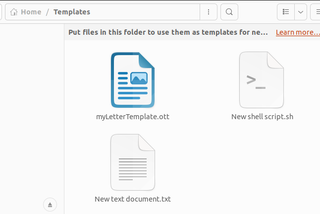

Week 40 - October 22
Friday 10/7
Just playing with huggingface projects.
Weekly someone from HF publishes news of the week
Last 2 weeks, Thomas Simonini has sent updates on Transformers, Stable Diffusion. 09/27 10/03
And just playing with these apps, I realize it has been developped using gradio. Should be nice to give a test. Could be usefull for this project: drag&drop badminton players spreadsheet, and return one with uptodate ranks
Week 41 - October 22
Wednesday 10/12
I am interested since a while to skip execution of some cells in notebooks.
I usually have to rerun (most parts of) a notebook when reopen it,
in order to get access to previously defined variables and go on working.
However, sometimes I'd like to skip some of the cells, which have no
influence to subsequent cells (e.g., they might comprise a branch of
analysis that is finished) and could take very long time to run.
These cells can be scattered throughout the notebook, so that something
like "Run All Below" won't help much.I had used freeze extension a while ago when using exclusively jupyter notebook, and now I use jupyter lab and I have not found any alternative
There is a solution proposed here https://stackoverflow.com/questions/19309287/how-to-intermittently-skip-certain-cells-when-running-ipython-notebook that could be of interest:
using %%cache
Saturday 10/15
just to create a bash script from Files app in ubuntu (explorer): https://itsfoss.com/add-new-document-option/

I would like to create HD pictures to support my pitch of my newbiz idea.
And korben has just tested promptomania to generate best prompt to generate diffusion pictures.
I have installed a verssion on my linux using https://sd-webui.github.io/stable-diffusion-webui/docs/2.linux-installation.html

Week 42 - October 22
Monday 10/17
Just taken back blogging with nbdev to handle publication using gh actions to gh pages.
And finally took time to start fastai courses with chapter 1 - Getting started.
Tuesday 10/18
Searching why dark mode doesn’t toggle as expected, I land on this thread https://github.com/quarto-dev/quarto-cli/issues/822
Quite interesting site where slides are published using quarto. https://pythoncoderunicorn.github.io/Quarto-RLadies/#/title-slide
An alternative to RISE?
Thursday 10/20
portainer
Just testing portainer for docker as explained in Run dataiku with docker
detect broken links in blog
And have to figure out a way to detect broken links:
- using google search console
As it takes a day to be processed I will test again tomorrow
favicon on blog
Creation of a favicon for this blog.
google analytics on blog
Setup google analytics, get G- Id, and update _quarto.yml accordingly as explained in quarto doc.
Analytics available here
Friday 10/21
Fastai courses 2022 chapter 2 - Deployment completed
Fastai courses 2022 chapter 3 - Neural net foundations